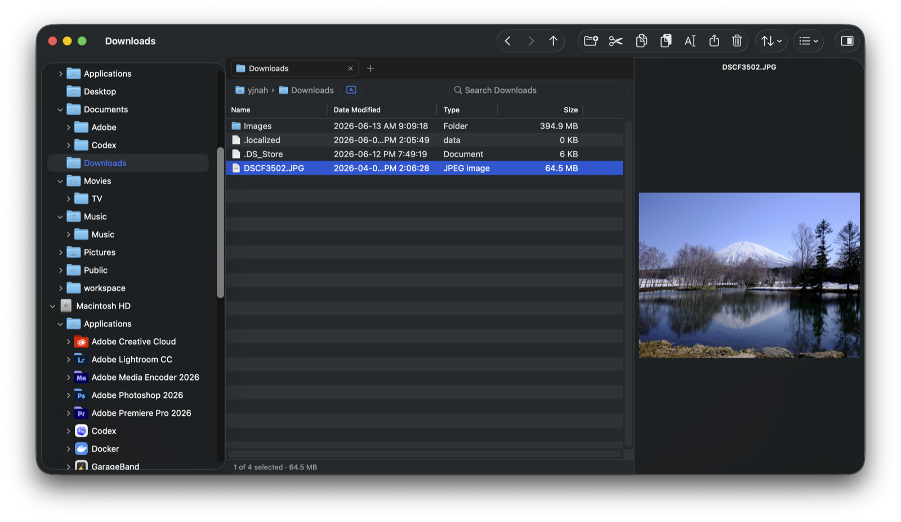
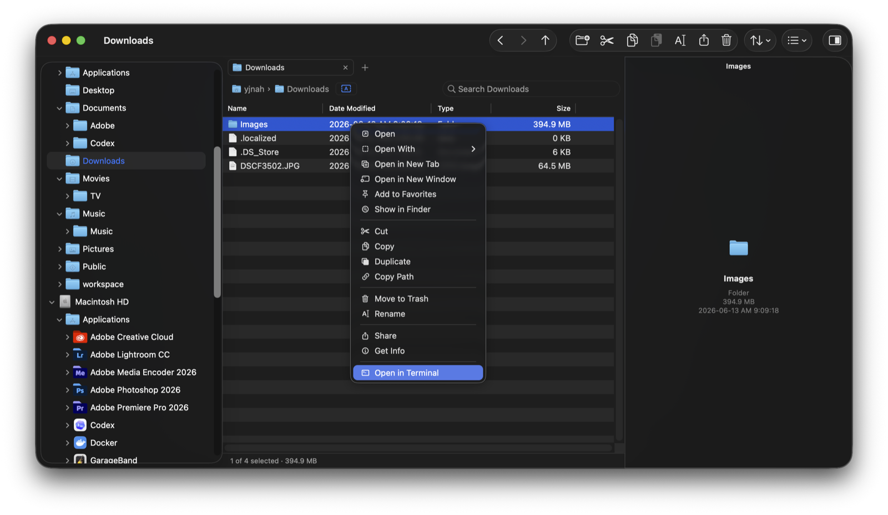
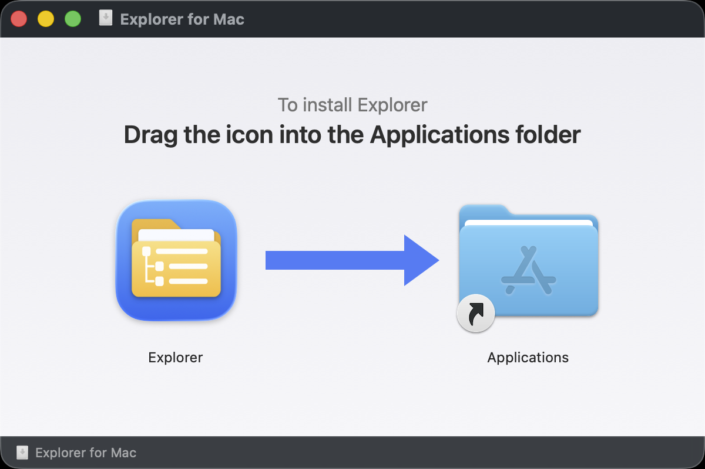

macOS · File manager
The Windows Explorer feel, right on your Mac.
Explorer for Mac is a native macOS file manager built for people coming from Windows. Stop fighting Finder — browse and manage files with the exact structure your hands already know.
- Persistent folder tree, tabs, and Favorites — the navigation structure Windows users expect, always one click away
- Cut, copy, paste, and ⌘R rename — your Windows keyboard shortcuts just work
- Undo and Redo for renames, moves, deletes, and copies — ⌘Z to take it back, ⌘⇧Z or ⌘Y to redo
- Editable address bar with typed paths, history, and drag-and-drop
- Folder sizes right in the Details view — visible at a glance, sortable like any column
- File safety first — Trash by default · fully offline · zero telemetry

Built for Windows muscle memory
Everything that made File Explorer fast is here — the folder tree, tabs, and the keyboard shortcuts your hands already know. No relearning, no fighting Finder.
Folder tree & tabs
A persistent tree on the left and tabs across the top, plus Favorites and an editable address bar. Drag a file onto another tab — hover to spring it open, then drop — just like Windows 11.
Windows shortcuts
Cut, copy, and paste with ⌘X / ⌘C / ⌘V, rename with ⌘R, and jump to a typed path with ⌘L. Type-ahead and arrow keys behave the way you expect.
Undo anything
Renames, moves, deletes, and copies are all undoable — ⌘Z to take it back, ⌘⇧Z or ⌘Y to redo. Deletes go to the Trash, never silently gone.
Right-click, like you're used to
Cut, copy, duplicate, and rename — plus Copy Path and Open in Terminal. The context menu works the way your muscle memory expects.

How to install
Download
Grab the DMG with the download button above and open it.
Drag to Applications
Drag the Explorer icon into the Applications folder — that's the whole install.
Allow folder access
On first launch, macOS asks for access to Desktop, Documents, and Downloads. It's the standard permission for browsing files; change it anytime in System Settings ▸ Privacy & Security.

Privacy. Explorer for Mac works fully offline and never collects or transmits anything — no file names, no paths, no usage data. The app is notarized by Apple. Found a problem? Use Help ▸ Report a Bug inside the app, or write to support@yjlab.io.